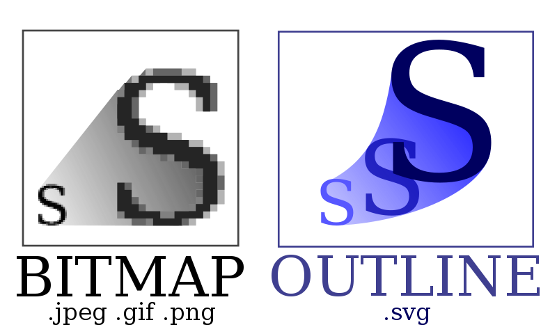

Графический формат — это способ записи графической информации. Графические форматы файлов предназначены для хранения изображений, таких как фотографии и рисунки.
Графические форматы делятся на векторные и растровые.
Векторная графика — способ представления сложных объектов и изображений в компьютерной графике основанный на использовании геометрических примитивов, таких как точки, линии, сплайны и многоугольники. Термин используется в противоположность к растровой графике, которая представляет изображение как матрицу фиксированного размера, состоящую из точек (пикселов) со своими параметрами. Для создания изображения векторного формата, отображаемого на растровом устройстве, используются преобразователи, программные или аппаратные (встроенные в видеокарту). Подавляющее большинство современных компьютерных видеодисплеев, в силу принципов используемых для построения изображения, предназначены для отображения информации в растровом формате. Кроме этого, существует узкий класс устройств, ориентированных исключительно на отображение векторных данных. К ним относятся мониторы с векторной развёрткой, графопостроители, а также некоторые типы лазерных проекторов. Термин «векторная графика» используется в основном в контексте двухмерной компьютерной графики.
Растровое изображение — это файл данных или структура, представляющая собой сетку пикселов или точек цветов (обычно прямоугольную) на компьютерном мониторе, бумаге и других отображающих устройствах и материалах.
Растровую графику редактируют с помощью растровых графических редакторов. Создается растровая графика фотоаппаратами, сканерами, непосредственно в растровом редакторе, также путем экспорта из векторного редактора или в виде скриншотов.